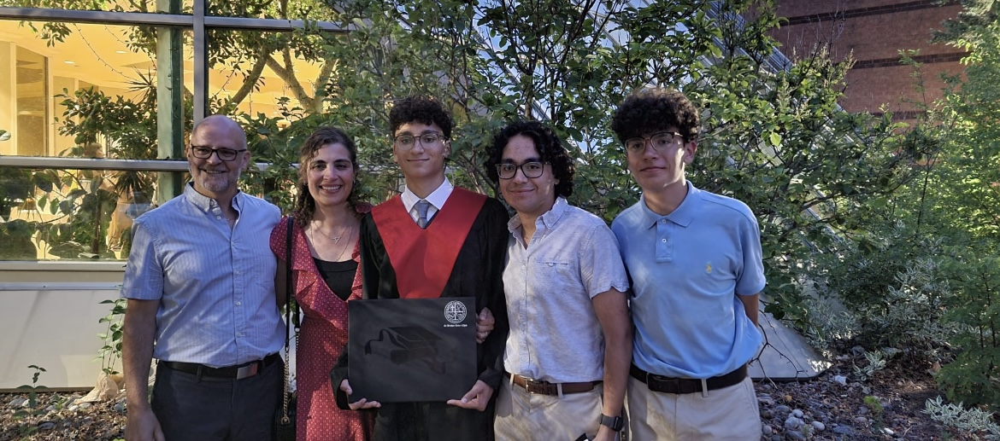

Jacob Gain
A website portfolio

A website portfolio
Here is some information about who I am.
My name is Jacob Gain. I am a second generation Greek-Canadian. Some of my favourite things to do are go for walks, play basketball, and spend time with my friends. I played basketball a lot growing up, and it was always my favourite sport. I played through high school but stopped in University. I am currently attending Western Univeristy as a second year Software Engineering student. I got into software in my junior year of high school, when I took my first computer science class. I really enjoyed it and I knew that this was what I wanted to do in my future. I have a passion for coding and I will never not enjoy the feeling of success when a program successfully runs for the first time. I believe that this true enjoyment for this profession will lead me to excel more than others, because there are plenty of people just in it for the money.
In my future, I want to be a successful software engineer for a company that values me as an asset and not just another employee number. I would prefer happiness over monetary success, and I want to make the people around me happy as well. I want to live up North with my future family, enjoying our time together and making memories. A short term goal that I have is to graduate from my program without being delayed by any academic reasons. I will pursure this using my strong work ethic and desire to learn.
